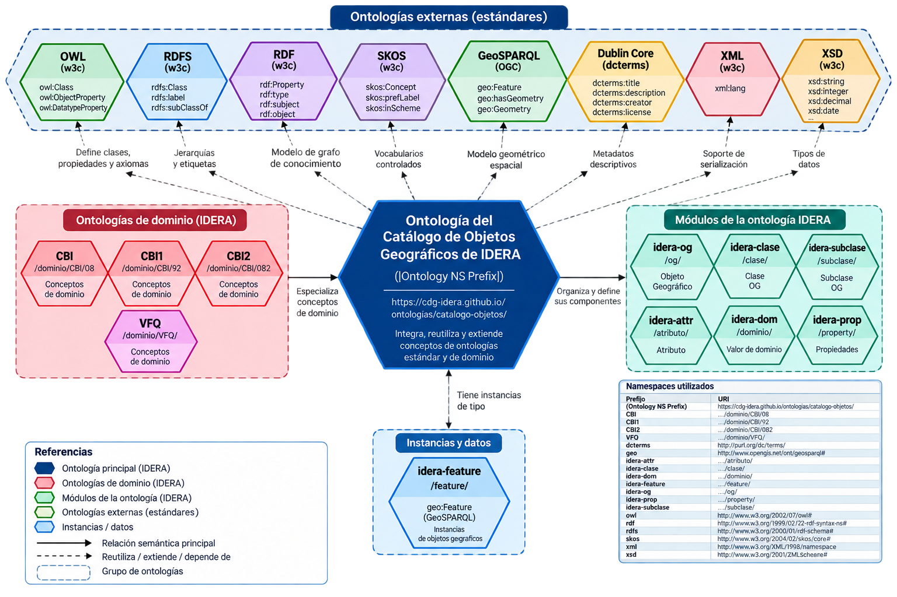
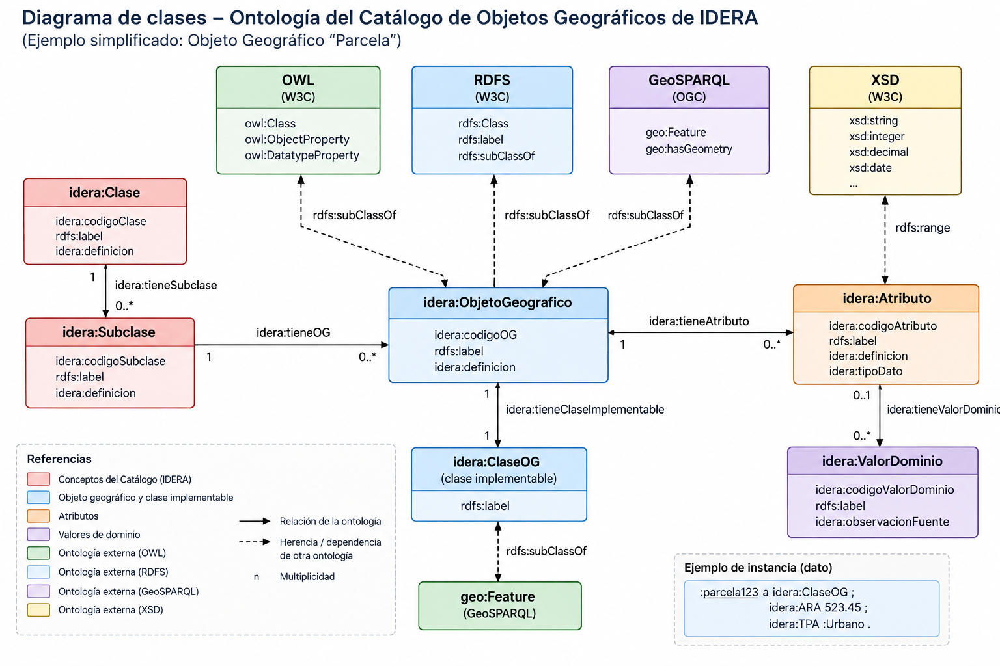
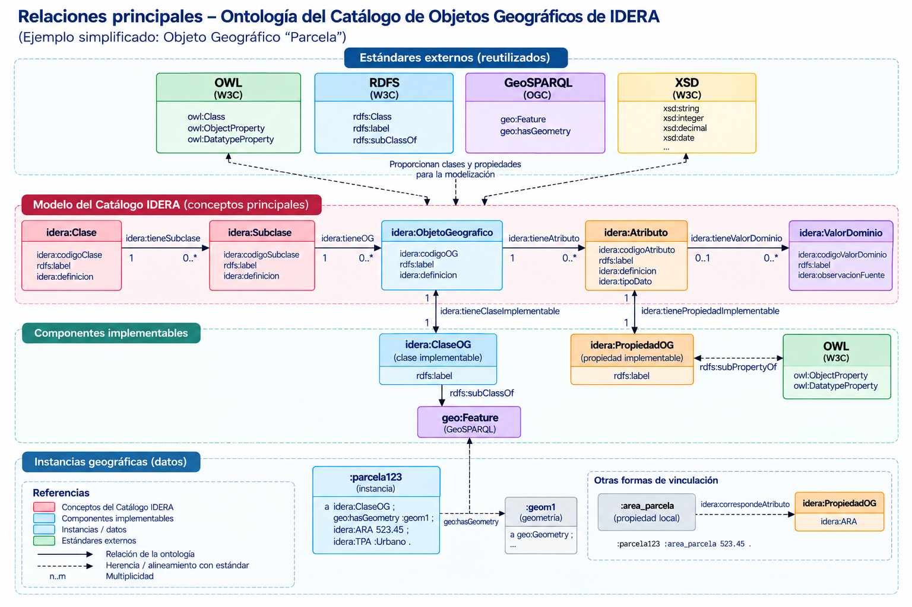

Accesos principales
Desde esta página puede acceder a la documentación, los archivos RDF de la ontología, los módulos de validación y los ejemplos reproducibles.
Documentación
Documentación técnica de la ontología generada con WIDOCO.
Explorar documentación →Ontología RDF / Turtle
Archivo principal que contiene la representación semántica del Catálogo de Objetos Geográficos de IDERA.
Abrir catalogo-idera.ttl →Ejemplos y pruebas
Casos reproducibles para GraphDB, SPARQL, SHACL y validación mediante pySHACL.
Explorar ejemplos →Validación SHACL
Módulo de conformidad para validar datos respecto de las restricciones formalizadas a partir del catálogo.
Abrir módulo SHACL →Validación geométrica
Módulo SHACL complementario para evaluar compatibilidad entre geometrías y tipos geométricos.
Abrir SHACL de geometría →Repositorio GitHub
Código fuente, ontología, módulos de validación, ejemplos y documentación del proyecto.
Abrir repositorio →Modelo semántico del Catálogo IDERA
La ontología formaliza los principales elementos del Catálogo de Objetos Geográficos de IDERA V2.2: Clases, Subclases, Objetos Geográficos, Atributos y Valores de Dominio.
El modelo utiliza estándares de la Web Semántica y del dominio geoespacial para proporcionar identificadores persistentes, relaciones explícitas y componentes que puedan ser utilizados por aplicaciones, infraestructuras de datos espaciales, sistemas de consulta y procesos automáticos de validación.
Los Objetos Geográficos se vinculan con
clases implementables, mientras que los
atributos del catálogo se vinculan con
propiedades implementables. Las clases
implementables se integran con GeoSPARQL mediante
geo:Feature, permitiendo representar instancias
geográficas concretas.
Arquitectura de la ontología
Los siguientes diagramas presentan la organización general de la ontología, sus principales relaciones y la vinculación entre el modelo del catálogo, los estándares reutilizados y las instancias geográficas.



Recursos técnicos
Archivos principales que componen la publicación de la ontología.
catalogo-idera.ttl
Ontología principal →
catalogo-idera-shacl.ttl
SHACL de conformidad →
catalogo-idera-shacl-geometria.ttl
SHACL de geometría →
docs/
Documentación WIDOCO →
ejemplos/
Ejemplos reproducibles →